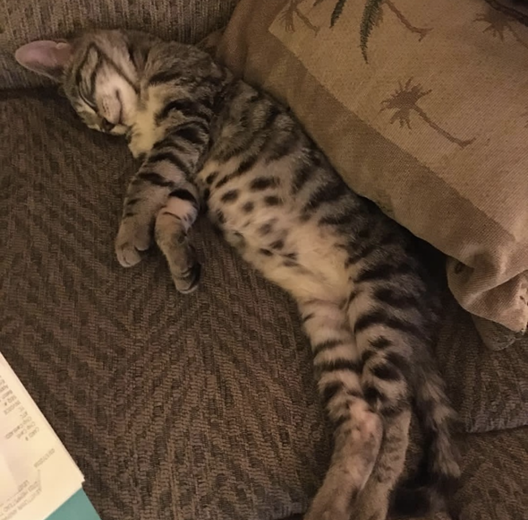
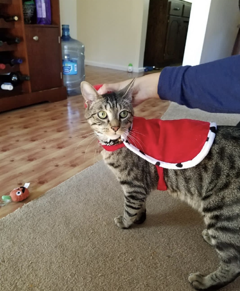
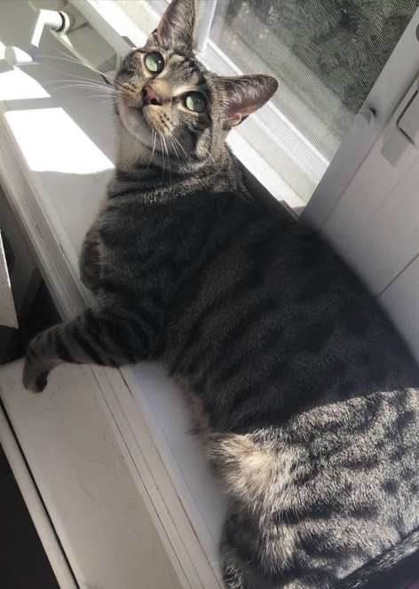
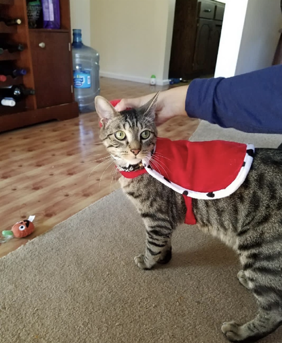
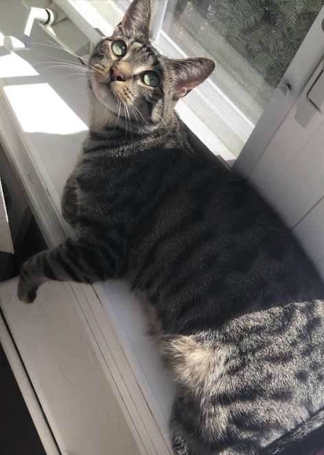

Finn is a 7 year old grey cat. I feel like no one really knows cat breeds so I’m just gonna go with grey. He loves doing tricks for treats and his favorite is giving high fives to people. He might as well be a dog as he loves the outdoors and meeting new people. I can only describe him as goofy and chaotic.
Finn’s biggest enemy is his vet. I don’t know whether or not it’s because his vet is an MSU alum, but he doesn’t like him. He actually has to be prescribed a sedative before he goes to the vet office because he’ll suddenly act like he was never a house cat for 7 years.
Photo Gallery
 



Likes
- Treats
- Head Rubs
- Sleeping in cardboard boxes